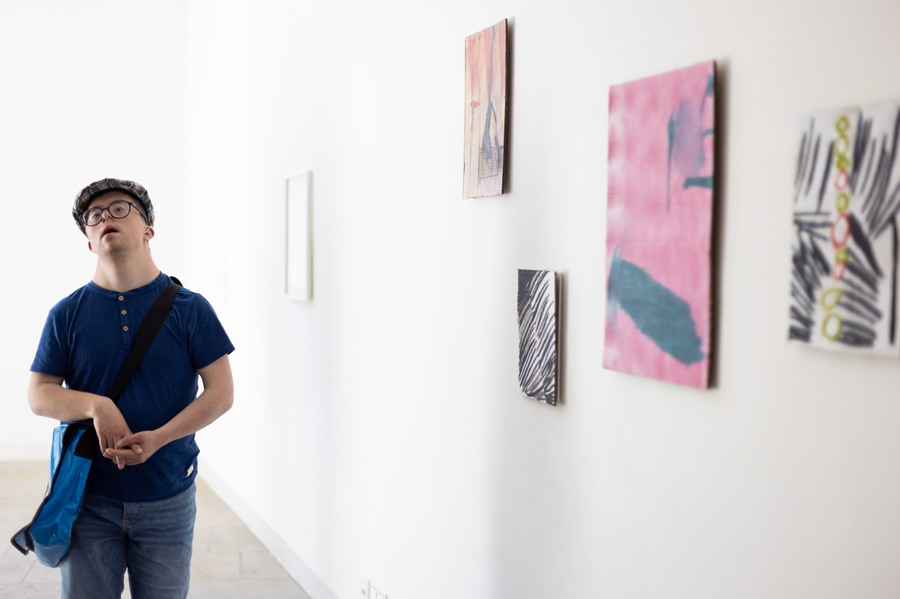
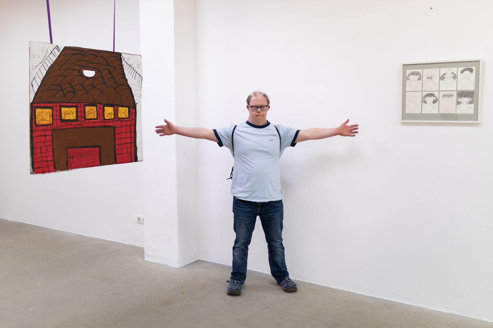
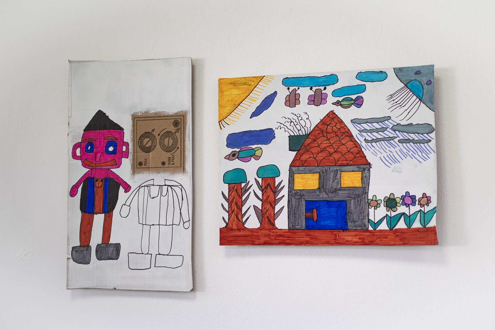

Ausstellung
Nische sucht Nische
Galeriespaziergang, Dresden 2025
In Sachsen findet das künstlerische Schaffen von und mit Künstler*innen
mit Behinderungen – trotz einer kleinen, aufstrebenden Szene –
bislang kaum öffentliche Beachtung. Zum 5. Mai, dem Europäischen
Protesttag zur Gleichstellung von Menschen mit Behinderung, setzte
farbwerk gemeinsam mit Dresdner Galerien ein Zeichen für mehr
Teilhabe in der Kunst.
Unter dem Titel Nische sucht Nische schufen acht Dresdner Galerien
gezielt Raum für Werke von Künstler*innen mit Behinderung – darunter
das Albertinum, die Galerie Gebr. Lehmann, die Galerie Ursula Walter,
der Künstlerbund Dresden, der Kunstverein Dresden e.V., die Galerie
Holger John, die Galerie Stephanie Kelly sowie das AHA Studio.

- 
- 
- 